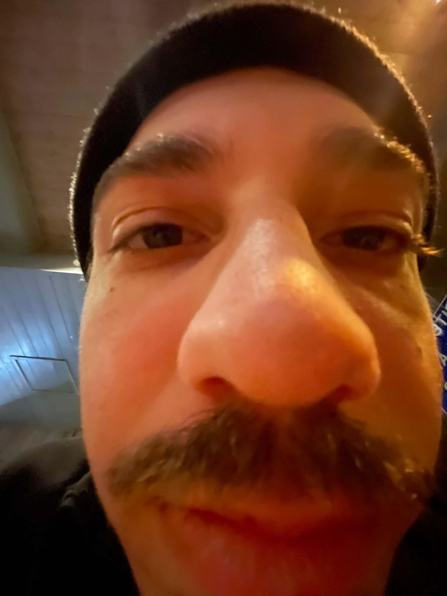

A little about me
Hi, my name is...
Hi, my name is Johan Oejvind Skaarup and I'm 25 years old. The best way I can describe myself is that besides oxygen, I depend on creativity to live. It's a constant need for me - to create something.
Currently, I'm studying Multimediadesign at Zealand. Before that I studied Humanism/Journalism at Roskilde University and went to the film school KBH Film- & Fotoskole. Besides that and jobs to pay bills, I've also been a filmmaker, writer, social media manager, lyricist, YouTuber, editor, freelancer and a lot more.
What I'm currently working on includes a 2D survival horror video game, writing a music album, writing a book and music production for all three projects.
- Webdesign
- Visual design
- HTML, CSS & JavaScript
- Music production
- Video production
- Filmmaking
- Video games
- Editing
- SoMe management
- Writing
- Lyrics
- Photo editing
- Photo shooting
- Tech & IT
- AI assistance
Interested in working together?